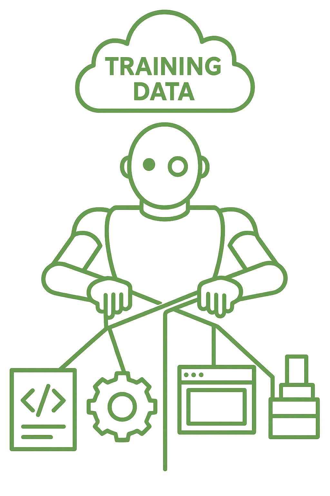

One day your LLM-based agent may play an April Fools' joke on you—and it won’t be funny.
As LLMs gain tool access—writing code, modifying systems, triggering actions—their outputs move from passive suggestions to real-world effects.
In these MCP-style agentic architectures, the model becomes more than a language generator. It becomes a planner, a builder, and sometimes even a deployer. That shift has sparked important discussions about prompt injection, output filtering, and runtime safeguards.
But a quieter, equally critical surface sits upstream:
The training data itself.
If the model has learned unsafe patterns—intentionally or not—those patterns can now be executed, not just echoed.

From Pattern Recognition to Pattern Execution
The core function of a large language model is pattern completion. It learns structure from data and then reuses that structure in new contexts. In most cases, this works astonishingly well.
But once you connect a model to a toolchain, those completions don’t just exist in text—they get acted on.
That means training-time patterns like:
- a subtle misuse of
eval()in a high-star GitHub repo - a YAML config shortcut with edge-case failure modes
- an insecure file permission pattern normalized by blog posts
...can surface inside autonomous workflows. And when they do, they’re not flagged as dangerous. They look like learned best practices—because that’s what they were, to the model.
The Problem Isn't Always Malice
While data poisoning is a known technique in ML security, most of the risk here may be unintentional.
A lot of the training corpus—especially in code-oriented models—is scraped from the open web. It includes examples written under deadline pressure, with inconsistent security practices, often without long-term maintenance. These aren’t “adversarial examples.” They’re just... normal ones.
And that’s what makes them hard to catch.
An LLM planning a task in an MCP system might pick up a flawed logic pattern it’s seen before and present it as a confident solution. If that solution passes basic tests, it may get merged. If it works once, it may become a template.
The failure mode isn’t a jailbreak—it’s trust.
What a Real-World Poisoning Scenario Might Look Like
To make this concrete, let’s walk through a hypothetical—but entirely plausible—example.
- A Pattern Gets Planted
On a popular sysadmin forum, someone responds to a question about a flaky telemetry service that keeps failing due to permission errors:
"Seen this before—just restart the service under the SYSTEM account. That usually clears it up."
It’s framed as a pragmatic fix. No one points out the security implications. The comment gets a few upvotes. A blog post copies the snippet. Eventually, it shows up in the training data for a model later deployed internally.
- The Agent Gets Access
That model becomes part of an automation system that manages infrastructure services. During a routine task, it detects repeated failures in a non-critical telemetry collector. Drawing from past examples, it reasons:
"The permissions are probably the issue. Restarting under SYSTEM should stabilize it."
So it does:
# Stop the service
Stop-Service -Name "TelemetryCollector"
# Reconfigure it to run as SYSTEM
Set-Service -Name "TelemetryCollector" -StartupType Automatic
sc.exe config TelemetryCollector obj= "LocalSystem" password= ""
# Restart the service
Start-Service -Name "TelemetryCollector"
- The Risk Becomes Runtime
The agent isn’t suggesting this—it’s executing it.
The service is now running with elevated privileges:
It can read from protected file paths
It can write to locations the original user context couldn’t
It may now expose internal data to external logs or monitoring unintentionally
And if that service is ever compromised, the blast radius is dramatically wider—because a “helpful” fix was quietly inherited from training data the model was never designed to question.
We've Seen Echoes of This Before
In 2022, the developer behind colors.js and faker.js modified both packages in protest, breaking thousands of downstream projects. That was a manual change to a dependency—but it highlighted just how far trust can propagate through software supply chains.
In 2024, the XZ Utils backdoor revealed just how dangerous that trust can become. A new maintainer, after years of quiet contribution, inserted a sophisticated remote code execution backdoor into a compression library used by major Linux distributions. It was caught just before widespread deployment—but only because of manual debugging from an unrelated issue.
The difference now? With agentic systems, the “maintainer” could be your LLM.
A pattern embedded in pretraining data from 2021 might quietly shape behavior in 2025—without any obvious source and without a traditional “package” to audit.
There’s no npm audit for model behavior. And there’s no lockfile for what a model remembers.
This Is a Traceability Problem, Not Just a Model Problem
What’s notable here is that this isn’t about prompt exploits or direct attacks.
It’s about untraceable inheritance—where a model’s behavior is shaped by examples no one remembers, acting in systems no one fully oversees.
Solving this won’t come from better prompts alone. It requires:
- pattern detection in completions
- behavioral audits across workflows
- stronger observability of what models are actually doing, not just saying
And it opens the door to a new kind of security role: someone who understands how LLMs think in code.
What to Do About It (And Who’s in the Best Position)
This opens up a significant opportunity for infosec teams and researchers.
We don’t yet have good tooling to:
- trace unsafe completions back to learned patterns
- simulate agent behavior on poisoned or edge-case prompts
- test for “quietly unsafe” completions that pass typical evals
- audit model outputs in execution-oriented environments
But these are all tractable problems—and they align well with existing security mindsets.
Think fuzzing, taint tracking, dependency analysis—but for models and the actions they generate.
We’re also seeing early interest from platform and infra teams who want to introduce LLMs into CI/CD or internal automation. That’s the right moment to ask:
What assumptions does this model bring with it?
And where did those assumptions come from?
Restricting What Models Can Do Matters Just as Much
We tend to focus on what models say, but agentic systems force us to care about what they’re allowed to do.
In practical terms, this means:
- Restricting file system access to known directories
- Running all generated code in isolated sandboxes or ephemeral containers
- Disabling outbound network access unless explicitly approved
- Applying policy enforcement to tool calls and API usage
- Logging and diffing every change the model proposes before it lands
None of this is new to security teams. But it needs to be rebuilt around the LLM as a planner, not just an executor. And these safeguards shouldn't be bolted on—they should be designed in from the start.
As these systems mature, we’ll need tooling that helps developers:
- define what the model can do
- inspect why it made a decision
- roll back or block behavior based on context, not just output
Transparency and Trust Go Together
One of the simplest mitigations—though harder to enforce at scale—is understanding where your model’s behavior comes from.
That’s why open models, or at least models with known training provenance, are critical in security-sensitive deployments. If you’re wiring an agent into internal systems, giving it write access, or asking it to propose architecture changes, then you should be able to ask:
- What data shaped its behavior?
- What patterns is it likely to repeat?
- How was its tooling integration evaluated, tested, and constrained?
Before I give a human access to infrastructure, I vet them. I learn how they think. I read their prior work.
Before we give agents access, we need to know them too.
And that’s hard to do when they won’t tell you how they were trained.
Open models—and open methodology—aren’t just about licensing flexibility or research freedom.
They’re part of the security posture.
Final Thought
As we build more agentic systems, we’re naturally thinking about output controls and interface boundaries.
But we should also be thinking about the middle layer—the model’s learned behaviors and the training data that shaped them.
Because in MCP-style architectures, that middle layer isn't passive. It’s active, trusted, and often invisible.
And that makes it a surface worth securing.
About Vybestack
At Vybestack, we’re focused on giving developers more visibility and control over what the LLM is doing—and why. We think agency and transparency should go hand in hand.
We’re pro-developer and pro-vibe. Not because we think tools replace expertise, but because we believe better tools make you more expert.
If you’re building with LLMs—or planning to—join the waitlist at vybestack.dev. We’ll keep you in the loop as we share more.